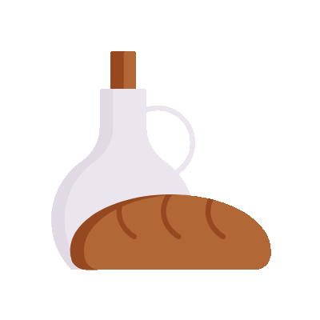
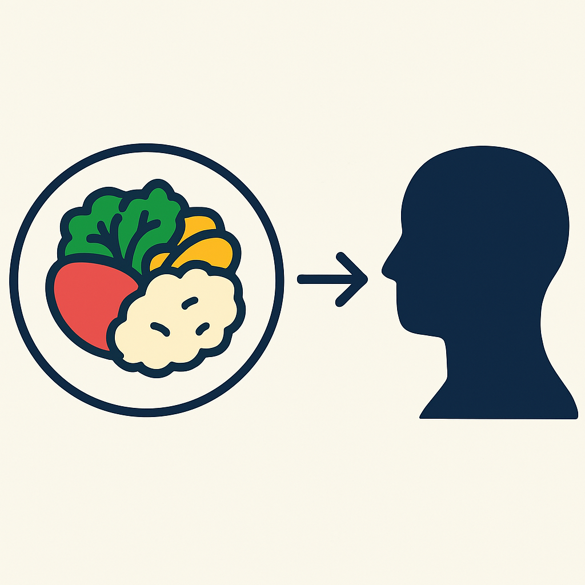

Une nouvelle façon de voyager en vivant des expériences culinaires locales chez des particuliers.
Ici, on goûte le monde
comme nulle part ailleurs.
Rejoignez la communauté des curieux du goût !
À vivre au moins une fois
Ici, on goûte le monde grâce à une plateforme de repas chez l’habitant !
Partagez un repas authentique préparé par un hôte passionné.
Que ce soit des ramens maison, des sushis ou des plats méconnus, chaque bouchée est une invitation au voyage.
Profitez d’une expérience chaleureuse, conviviale et pleine de saveurs
— sans quitter votre ville.
Venez, Mangez !
Des rencontres qui marquent
Top 10 des meilleures rencontres autour de la table
Sur Venez, Mangez !, vous ne mangez pas chez quelqu’un… vous entrez dans son univers.
Les repas partagés entre inconnus deviennent des moments précieux, où naissent des histoires, des rires, des traditions… et parfois des amitiés.
Voici notre sélection des 10 moments de rencontre les plus marquants, inattendus et inspirants.
Des expériences garanties
Comment fonctionne la certification ?
Pour garantir des repas faits maison authentiques, nous avons mis en place un système de certification.
Chaque hôte est évalué sur l’hygiène, l’accueil, et le respect des traditions.
Découvrez les meilleures expériences culinaires locales et partagez un dîner chaleureux.

Plats oubliés des cartes de restaurant
Les plats traditionnels que vous ne verrez (presque) jamais au restaurant…
On parle souvent des grands classiques de la gastronomie… mais qu’en est-il des vrais plats du quotidien, ceux qu’on ne trouve qu’à la maison ?
Des recettes simples, parfois longues, souvent oubliées… mais toujours chargées d’histoire et d’émotion
Des expériences garanties
La nourriture comme extension de notre identité
Ce que nous mangeons n’est jamais anodin.
Derrière chaque plat se cache un héritage, une valeur,
une histoire. Que tu sois couscous du vendredi,
pâtes au beurre à minuit ou soupe miso du dimanche,
ta cuisine en dit long sur qui tu es.


.gif)